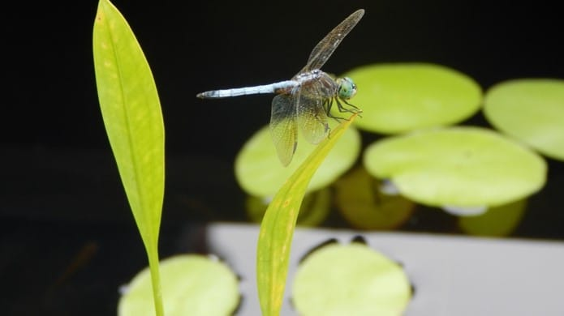

Curriculum Vitae
Main Page
Home Town
Courses Completed
Career Path

Education
University of North Carolina - Chapel Hill, 08/2013-08/2015: MS in information science
College of William & Mary, graduated 05/2012: BA in German studies
Vassar College, 05/2008-07/2008: summer exchange program in Munster, Germany
Piedmont Virginia Community College, 09/2006-12/2006: dean's list
Virginia Commonwealth University, 09/2004-05/2006: majoring in music, dean's list
Work Samples
Marijuana policy table
Master's paper and related scripts:
here
Web Databases:
Project 2: scientific journal articles
,
Project 4: video search
Database Systems II
Data Visualization:
Assignment 13
, final project
here
and
here
Marijuana Policy Project
: articles
Students for Sensible Drug Policy
: articles
Technical Skills
HTML5/CSS3 (W3Schools
Certification
)
Javascript (W3Schools
Certification
)/JQuery
Microsoft Office: Word, Excel, Outlook, PowerPoint, Access
PHP (W3Schools
Certification
)
Python
SQL/MySQL (W3Schools
Certification
)
XML (W3Schools
Certification
)
Employment
WorldStrides
(Charlottesville, VA): 09/2015 - 11/2015 (temporary web developer)
Participatory Culture Foundation
-
Amara
(Boston, MA): 09/2015-10/2015 (trial position: testing, documentation and support project manager)
Advertising Educational Foundation
(New York, NY): 09/2014-11/2014 (research assistant)
Law Enforcement Against Prohibition
(Silver Spring, MD): 06/2014-10/2014 (remote: college events coordinator)
Participatory Culture Foundation
-
Amara
(Boston, MA): 08/2013-present (remote: transcribing, synchronizing, reviewing, and translating video subtitles)
The Libertarian
(London, UK): 07/2013-03/2014 (article contributor, weekly editor)
Students for Sensible Drug Policy
(Washington, DC): 08/2013-03/2014 (article contributor)
Marijuana Policy Project
(Washington, DC): 07/2012-11/2012 (media and communications intern)
Volunteering
International Rescue Committee
(Charlottesville, VA): 03/2009-01/2010, 07/2012-07/2013 (volunteer: English tutoring)
Sarvis for Governor (Virginia): 04/2013-06/2013 (volunteer signature collector)
Fiske Kimball Fine Arts Library
(Charlottesville, VA): 02/2013-06/2013, volunteer: shifting, shelving, misc.
Learning Ally
(Charlottesville, VA): 07/2012-12/2012 (volunteer: recording and editing audio materials)
University of Virginia Alderman Library
(Charlottesville, VA): 05/2012-11/2012 (volunteer: cataloging, shelving, etc.)
University of Virginia Music Library
(Charlottesville, VA): 07/2012-11/2012 (volunteer: cataloging, shelving, labeling, etc.)
Law Enforcement Against Prohibition
: 09/2009-05/2012 (remote volunteer: speaker booking, research)